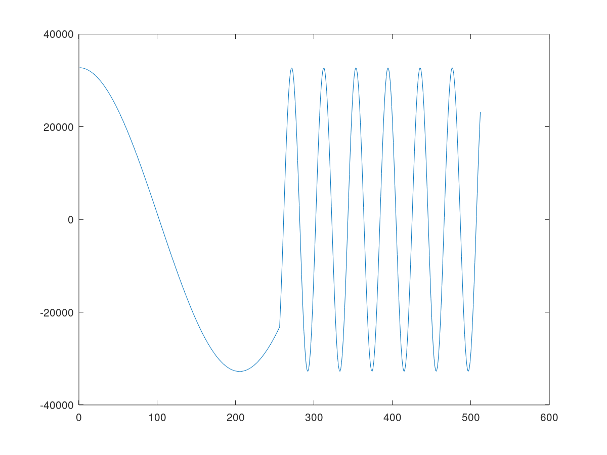

Kernel execution depends on the availability of windows of data on their inputs, and the space to write windows of data on their outputs. This example illustrates a complementary method, whereby a kernel will only get triggered to run after a write of data from another processor. This can be an ARM® processor or another AI Engine.
In this example, a write from an Arm processor causes a partial sine wave to be generated using the direct digital synthesis (DDS) kernel on the AI Engine. The Arm processor can control the frequency of the sine wave by writing different values to the runtime parameter. In the HW and HW cosim flow, the AI Engine output is streamed to the PL kernels, and the PS controls the running AI Engine and PL. The following figure shows this example.

Note: The default working directory in this step is “step1”, unless specified explicitly otherwise.
Examine the header file aie/dds.h, of the sine kernel (DDS):
```
void sine(const int32 phase_increment,output_window<cint16> * owin);
```
Now examine aie/kernels/dds.cc, and notice how phase_increment is used in the sine function:
```
phase_in += (phase_increment << 6);
auto [sin_,cos_] = aie::sincos(phase_in << 14) ; // phase_in + (7i + j + 1) * phase_increment
cint16 scvalues={cos_,sin_};
```
Examine aie/graph.h and aie/graph.cpp. These are provided as a starting point to specify the data flow graph of this example.
In graph.h, the kernel object dds, the graph input port trigger, and the graph output port out are declared in the ddsgraph class. The DDS kernel object is bound to the sine function declared in the included dds.h header. The DDS kernel output is connected to the graph output. It tells the compiler that the source for the function is in kernels/dds.cc. The kernel output is connected to out.in[0], which will be directed to data/output.txt.
```
out = adf::output_plio::create("Dataout", adf::plio_32_bits, "data/output.txt");
adf::connect< adf::window<512> >(dds.out[0], out.in[0]);
```
In graph.cpp, an instance of the ddsgraph, gr, is instantiated.
In the main() function, graph init(), run(), and end() are called to initialize, run, and wait to be ended.
```
gr.init();
gr.run(4);
…
gr.end();
```
The graph run() has been called with the parameter 4 to specify the iteration number of the graph. Otherwise, it will run forever.
Examine aie/graph.h again. The following line is to connect the trigger input port of the graph to the first input port of the dds kernel (i.e., the phase_increment parameter of the sine function).
```
adf::connect<adf::parameter>(trigger, dds.in[0]);
```
The syntax of this connection is:
```
adf::connect<adf::parameter>(input_port&, output_port&);
```
Note: You need to use the template class argument adf::parameter to specialize the connection type to the parameter type (because you are now connecting parameters and not windows of data). The parameter does not need to be sized in the same way as a window, because the compiler can always determine its size.
Examine aie/graph.cpp. You can see the lines of code to update the RTP. Note that the number of updates matches the number of iterations specified in gr.run(4).
```
gr.update(gr.trigger,10);
gr.update(gr.trigger,10);
gr.update(gr.trigger,100);
gr.update(gr.trigger,100);
```
The graph update calls update:
The trigger input with a value of 10 in the ping buffer
The trigger input with a value of 10 in the pong buffer
The trigger input with a value of 100 in the ping buffer
The trigger input with a value of 100 in the pong buffer
The syntax of the graph update function is:
```
void adf::graph::update(input_port &portName, int value);
```
Because the runtime parameter in this example is synchronous, the graph execution on the AI Engine will start after the first update call for one iteration, then wait for the next trigger by the next update call. Four consecutive update calls will run the graph for four iterations, where the first two iterations use 10 as the value for the phase_increment parameter and the last two iterations use 100.
Run the AI Engine compiler and the AI Engine simulator to verify the functional correctness of the design. Note that graph.cpp is only used for the AI Engine simulator, which is a SystemC simulation.
The make command to run the AI Engine compiler to generate the AI Engine design graph (libadf.a) is:
```
make aie
```
The corresponding command for aiecompiler is:
```
aiecompiler -platform=$PLATFORM_REPO_PATHS/xilinx_vck190_es1_base_202120_1/xilinx_vck190_es1_base_202120_1.xpfm -include="./aie" -include="./data" -include="./aie/kernels" -include="./" -workdir=./Work aie/graph.cpp
```
Switches for the AI Engine are as follows:
-platform: specifies the path to the target platform
-include: specifies the path to find header and source files
-workdir: specifies the output directory. By default, the compiler generates all its output into a subdirectory called Work.
aie/graph.cpp: specifies the graph source file
For more information about AI Engine programming and tools, refer to the Versal ACAP AI Engine Programming Environment User Guide (UG1076).
After the graph has been compiled, run aiesimulator using the following make command:
```
make aiesim
```
The corresponding AI Engine simulator command is:
```
aiesimulator --pkg-dir=./Work
```
After simulation completes, you should see the output.txt file in aiesimulator_output/data. The output file contains output data and timestamps. You can compare the generated output.txt file with the golden reference file (data/golden.txt) using the following commands in command line:
```
grep -v T aiesimulator_output/data/output.txt > aiesimulator_output/data/output_data.txt
diff -w aiesimulator_output/data/output_data.txt ./data/golden.txt
```
The timestamps in output.txt are removed in the new output file output_data.txt. The new output file should match the data in golden.txt. If the files match it is normal to see no output from the diff command.
If you are using MATLAB or Octave, you can use the following script to visualize the data:
```
data=load('./aiesimulator_output/data/output_data.txt', '-ascii');
plot(data(:,1))
```
This plots the first column (real part) of the output complex data.

In aie/kernels/dds.cc, the sine kernel function uses the sincos intrinsic with the phase parameter to generate 32-bit integer concatenating Sine (bits [31:16]) and Cosine (bits [15:0]) in signed Q.15 fixed-point format. The 32-bit integer output samples are cast and stored in a cint16 window. As a result, the first column (real part) represents a cosine waveform. In the four iterations, the first two iterations use a value of 10 as the phase_increment parameter and the last two iterations use 100, so you see the cosine waveform frequency increases in the middle of the plot.
Use the following line to plot the second column (imaginary part) of the output complex data.
```
plot(data(:,2))
```
The following plot shows the sine waveform generated by the sine kernel function with the frequency changed in the middle of the simulation iterations.

In the previous step, you generated the AI Engine design graph (libadf.a) using the AI Engine compiler. Note that the graph has instantiated a PLIO (adf::output_plio in aie/graph.h), which will be connected to the PL side.
```
out = adf::output_plio::create("Dataout", adf::plio_32_bits, "data/output.txt");
```
Here, plio_32_bits indicates the interface to the PL side is 32 bits wide. In the PL side, an HLS kernel s2mm will be instantiated. It will receive stream data from the AI Engine graph, and output data to global memory, which will be read by the host code in the PS.
Note: In this section, the make commands apply to hw_emu mode by default. Taking the hw_emu mode as an example, to target hw mode, add TARGET=hw to the make commands. For detailed commands, change the -t hw_emu option to -t hw.
To compile the HLS PL kernel, run the following make command:
```
make kernels
```
The corresponding v++ compiler command is as follows:
```
v++ -c --platform xilinx_vck190_es1_base_202120_1 -k s2mm s2mm.cpp -o s2mm.xo --verbose --save-temps
```
Switches for the v++ compiler are as follows:
-c: compiles the kernel source into Xilinx object (.xo) files.
--platform: specifies the name of a supported platform as specified by the PLATFORM_REPO_PATHS environment variable, or the full path to the platform .xpfm file.
-k: specifies the kernel name.
The next step is to link the AI Engine graph and PL kernels to generate the hardware platform. The make command for this is as follows:
make xclbin
This make takes 10 minutes or more to complete. The corresponding v++ linker command is as follows:
```
v++ -g -l --platform xilinx_vck190_es1_base_202120_1 pl_kernels/s2mm.xo libadf.a -t hw_emu --save-temps --verbose --config system.cfg -o vck190_aie_base_graph_hw_emu.xclbin
```
Switches for the v++ linker are as follows:
-l: links the PL kernels, AI Engine graph and platform into an FPGA binary file (xclbin).
-t: specifies the link target, hw for hardware run, hw_emu for HW emulation.
--config: specifies the configuration file. The configuration file (system.cfg), specifies stream connections between the Graph and PL kernels, and other optional selections.
After generating the hardware platform, compile the host code (sw/host.cpp) using the following make command:
```
make host
```
The detailed commands for compiling the host code are as follows:
```
${CXX} -std=c++14 -I$XILINX_HLS/include/ -I$PLATFORM_REPO_PATHS/sw/versal/xilinx-versal-common-v2021.2/sysroots/aarch64-xilinx-linux//usr/include/xrt/ -O0 -g -Wall -c -fmessage-length=0 --sysroot=$PLATFORM_REPO_PATHS/sw/versal/xilinx-versal-common-v2021.2/sysroots/aarch64-xilinx-linux/ -I$XILINX_VITIS/aietools/include -I../ -I../aie -o aie_control_xrt.o aie_control_xrt.cpp
${CXX} -std=c++14 -I$XILINX_HLS/include/ -I$PLATFORM_REPO_PATHS/sw/versal/xilinx-versal-common-v2021.2/sysroots/aarch64-xilinx-linux//usr/include/xrt/ -O0 -g -Wall -c -fmessage-length=0 --sysroot=$PLATFORM_REPO_PATHS/sw/versal/xilinx-versal-common-v2021.2/sysroots/aarch64-xilinx-linux/ -I$XILINX_VITIS/aietools/include -I../ -I../aie -o host.o host.cpp
${CXX} -o ../host.exe aie_control_xrt.o host.o -ladf_api_xrt -lgcc -lc -lxrt_coreutil -lxilinxopencl -lpthread -lrt -ldl -lcrypt -lstdc++ -L$PLATFORM_REPO_PATHS/sw/versal/xilinx-versal-common-v2021.2/sysroots/aarch64-xilinx-linux//usr/lib/ --sysroot=$PLATFORM_REPO_PATHS/sw/versal/xilinx-versal-common-v2021.2/sysroots/aarch64-xilinx-linux/ -L$XILINX_VITIS/aietools/lib/aarch64.o
```
Here, the cross compiler pointed by CXX is used to compile the linux host code. aie_control_xrt.cpp is copied from the directory Work/ps/c_rts.
The host code for HW emulation and HW (sw/host.cpp) includes OpenCL APIs to control the executions of PL kernels, and adf APIs (*init(),update(),run(),wait()*). The execution model of the PL kernel is composed of the following steps:
Get the OpenCL platform and device:
a. Prepare OpenCL context and command queue.
b. Program xclbin.
c. Get kernel objects from the program.
Prepare the device buffers for kernels. Transfer data from the host memory to the global memory in the device.
The host program sets up the kernel with its input parameters and triggers the execution of the kernel on the FPGA.
Wait for kernel completion.
Transfer data from the device global memory to host memory.
Host code performs post-processing on the host memory.
Following is a code snippet from sw/host.cpp to illustrate these concepts:
```
#include "adf/adf_api/XRTConfig.h"
#include "experimental/xrt_kernel.h"
...
//1. Get OpenCL platform and device, prepare OpenCL context and command queue. Program xclbin, and get kernel objects from the program. adf::registerXRT() is needed for ADF API.
cl::Device device;
std::vector<cl::Platform> platforms;
cl::Platform::get(&platforms);
...
cl::Context context(device);
cl::CommandQueue q(context, device, CL_QUEUE_PROFILING_ENABLE | CL_QUEUE_OUT_OF_ORDER_EXEC_MODE_ENABLE);
...
cl::Program::Binaries bins;
cl::Program program(context, devices, bins);
cl::Kernel krnl_s2mm(program,"s2mm"); //get kernel object
...
// Create XRT device handle for ADF API
void *dh;
device.getInfo(CL_DEVICE_HANDLE, &dh);
auto dhdl = xrtDeviceOpenFromXcl(dh);
auto top = reinterpret_cast<const axlf*>(buf);
adf::registerXRT(dhdl, uuid);
//2. Prepare device buffers for kernels. Transfer data from host memory to global memory in device.
std::complex<short> *host_out; //host buffer
cl::Buffer buffer_out(context, CL_MEM_WRITE_ONLY, output_size_in_bytes);
host_out=(std::complex<short>*)q.enqueueMapBuffer(buffer_out,true,CL_MAP_READ,0,sizeof(int)*OUTPUT_SIZE,nullptr,nullptr,nullptr);
//3. The host program sets up the kernel with its input parameters
krnl_s2mm.setArg(0,buffer_out);
krnl_s2mm.setArg(2,OUTPUT_SIZE);
//Launch the Kernel
q.enqueueTask(krnl_s2mm);
// ADF API: Initialize, run and update graph parameters (RTP)
gr.run(4);
gr.update(gr.trigger,10);
gr.update(gr.trigger,10);
gr.update(gr.trigger,100);
gr.update(gr.trigger,100);
gr.wait();
//4. Wait for kernel completion.
q.finish();//Wait for s2mm to complete
//5. Transfer data from global memory in device to host memory.
q.enqueueMigrateMemObjects({buffer_out},CL_MIGRATE_MEM_OBJECT_HOST);
q.finish();//Wait for memory transfer to complete
//6. post-processing on host memory - "host_out"
```
Head files adf/adf_api/XRTConfig.h and experimental/xrt_kernel.h are needed by the adf API and XRT API.
Note: In this example, graph execution needs to start before finish() for the command queue. If finish() is invoked first, which is a blocking call, the graph will never start and provide output to s2mm, and hence the application will hang on the blocked point.
The next step is to use v++ with -p to generate the package file. The make command is:
make package
The corresponding v++ command is:
```
v++ -p -t hw_emu -f $PLATFORM_REPO_PATHS/xilinx_vck190_es1_base_202120_1/xilinx_vck190_es1_base_202120_1.xpfm \
--package.rootfs $PLATFORM_REPO_PATHS/sw/versal/xilinx-versal-common-v2021.2/rootfs.ext4 \
--package.kernel_image $PLATFORM_REPO_PATHS/sw/versal/xilinx-versal-common-v2021.2/Image \
--package.boot_mode=sd \
--package.image_format=ext4 \
--package.defer_aie_run \
--package.sd_dir data \
--package.sd_file host.exe vck190_aie_base_graph_hw_emu.xclbin libadf.a
```
Here --package.defer_aie_run specifies that the Versal AI Engine cores will be enabled by the PS. When not specified, the tool will generate CDO commands to enable the AI Engine cores during PDI load instead.
--package.sd_dir <arg> specifies a directory path to package into the *sd_card* directory/image, which is helpful for including some golden data into the package.
“--package.sd_file <arg>” is used to specify files to package into the *sd_card* directory/image.
For more details about v++ -p (--package) options, refer to Application Acceleration Development (UG1393).
The final step is to run HW emulation using the following make command:
```
make run_hw_emu
```
The corresponding script is as follows:
```
./launch_hw_emu.sh
```
Hint: Option -add-env VITIS_LAUNCH_WAVEFORM_BATCH=1 can be added to launch_hw_emu.sh to record the waveform of the platform into waveform file (*.wdb).
Hint: Hitting a key accidentally will prevent the system booting automatically. If this happens, type boot in the Versal> prompt to resume the system booting.
After Linux has booted, run following commands in Linux prompt (this is only for HW cosim):
```
mount /dev/mmcblk0p1 /mnt
cd /mnt
export XILINX_XRT=/usr
export XCL_EMULATION_MODE=hw_emu
./host.exe a.xclbin
```
To exit QEMU press Ctrl+A, x
Alternatively, to run in hardware, after booting Linux, run following commands in the Linux prompt:
```
export XILINX_XRT=/usr
cd /mnt/sd-mmcblk0p1
./host.exe a.xclbin
```
The host code is self-checking. It will check the output data against the golden data. If the output data matches the golden data, after the run is completed, it will print:
```
TEST PASSED
```
In this step, you learned about the following core concepts:
Synchronous update of scalar RTP
Flows to perform AI Engine simulation
HW emulation and HW run
Next, review Asynchronous Update of Scalar RTP.
==========
GitHub issues will be used for tracking requests and bugs. For questions go to forums.xilinx.com.
Licensed under the Apache License, Version 2.0 (the “License”); you may not use this file except in compliance with the License.
You may obtain a copy of the License at http://www.apache.org/licenses/LICENSE-2.0
Unless required by applicable law or agreed to in writing, software distributed under the License is distributed on an “AS IS” BASIS, WITHOUT WARRANTIES OR CONDITIONS OF ANY KIND, either express or implied. See the License for the specific language governing permissions and limitations under the License.
XD001 | © Copyright 2020-2021 Xilinx, Inc.
==========